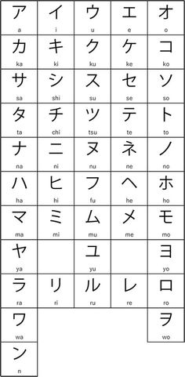

Depois de ter aprendido o Hiragana vamos para o Katakana!.
O alfabeto Katakana é utilizado quando a palavra ou nome não tem origem japonesa, como por exemplo nomes próprios derivados do ocidente, nomes de países, comidas estrangeiras, etc. Além disso, utiliza-se o Katakana para onomatopeias ou em casos em que o autor queira destacar determinada palavra.

Aqui você vê um tutorial para aprender a escrita.